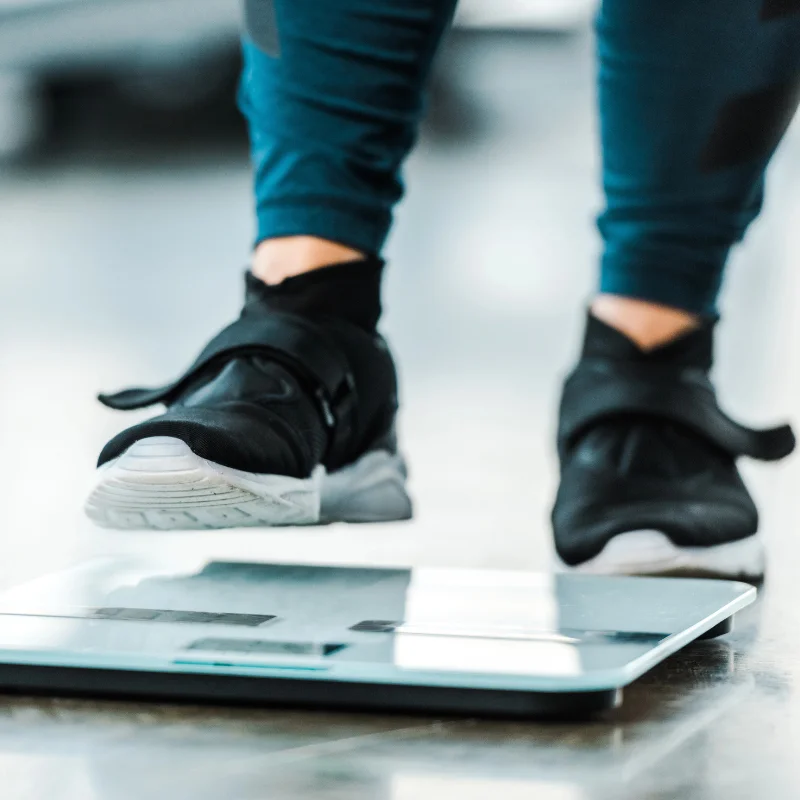
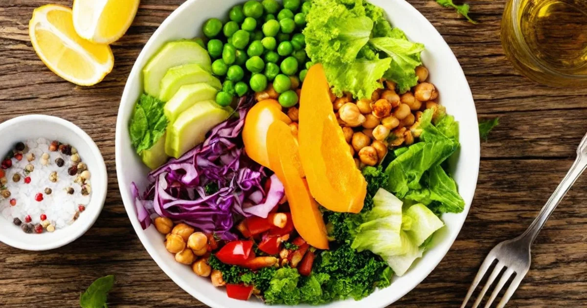
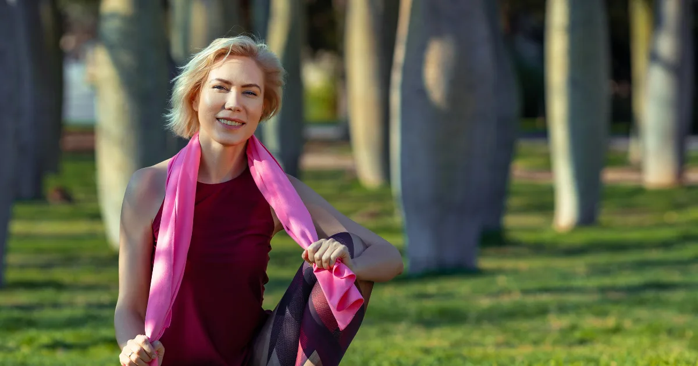

Hubnutí po 40: co se mění a jak na to
Překročili jste čtyřicítku a máte pocit, že hubnutí už nefunguje jako dřív? Nejste sami. Kolem 40. roku věku se v těle dějí hormonální a metabolické změny, které hubnutí objektivně ztěžují. Kila přibývají snáz a mizí pomaleji. Ale neznamená to, že je to nemožné – jen je potřeba přistoupit k věci trochu jinak.
V tomto článku si vysvětlíme, proč se po čtyřicítce hubne hůř, co s tím můžete udělat a jak si nastavit jídelníček i pohyb tak, aby výsledky přišly – bezpečně a udržitelně.

Proč je hubnutí po 40 těžší
Po čtyřicítce se v těle odehrává několik procesů, které přímo ovlivňují schopnost hubnout:
Zpomalení metabolismu
Bazální metabolismus klesá přibližně o 1–2 % za dekádu po 30. roce věku. To znamená, že vaše tělo v klidu spaluje méně energie než před deseti lety. Hlavní příčinou je úbytek svalové hmoty (sarkopenie), který přirozeně přichází s věkem. Více o tom, jak metabolismus funguje, najdete v článku o bazálním metabolismu.
Hormonální změny
U žen se po 40 začíná projevovat perimenopauza – postupný pokles estrogenu, který podporuje ukládání tuku zejména v oblasti břicha. U mužů klesá hladina testosteronu, což rovněž vede ke snížení svalové hmoty a zvýšení podílu tuku.
Změna životního stylu
S věkem se často snižuje spontánní fyzická aktivita. Práce bývá více sedavá, přibývá povinností a na pohyb zbývá méně času. Zároveň se mohou objevit první zdravotní potíže (klouby, záda), které pohyb komplikují.
| Faktor | Před 40 | Po 40 |
|---|---|---|
| Bazální metabolismus | Vyšší | Nižší o 5–10 % |
| Svalová hmota | Stabilní | Ubývá 3–5 % za dekádu |
| Hormonální hladiny | Stabilní | Klesající estrogen/testosteron |
| Inzulinová citlivost | Dobrá | Často snížená |
| Regenerace | Rychlá | Pomalejší |

Jídelníček na hubnutí po 40
Strava po čtyřicítce by měla být promyšlenější než kdy dřív. Nejde o to jíst co nejméně – jde o to jíst kvalitně a v přiměřeném množství.
Základní pravidla
- Zvyšte příjem bílkovin – 1,2–1,6 g na kg hmotnosti denně. Bílkoviny pomáhají udržet svalovou hmotu, která s věkem přirozeně ubývá.
- Omezte jednoduché sacharidy – bílé pečivo, sladkosti a slazené nápoje nahraďte celozrnnými variantami, zeleninou a luštěninami.
- Hlídejte si vlákninu – 25–30 g denně. Vláknina zlepšuje trávení, prodlužuje pocit sytosti a pomáhá regulovat hladinu cukru v krvi.
- Nepodceňujte tuky – zdravé tuky z ryb, ořechů a olivového oleje jsou důležité pro hormonální rovnováhu.
- Kalorický deficit ano, ale mírný – stačí 300–400 kcal pod vaše TDEE. Příliš nízký příjem zpomalí metabolismus ještě víc.
Vzorový denní jídelníček
| Jídlo | Příklad | Přibližně kcal |
|---|---|---|
| Snídaně | Ovesná kaše s ořechy a borůvkami | 350 |
| Svačina | Řecký jogurt s lžičkou medu | 150 |
| Oběd | Kuřecí prsa, quinoa, grilovaná zelenina | 500 |
| Svačina | Jablko, hrst mandlí | 200 |
| Večeře | Losos, brambory, salát | 450 |
Orientační jídelníček pro ženu s TDEE 1 900 kcal (deficit ~250 kcal).
Chcete si přesně spočítat, kolik kalorií potřebujete? Podívejte se na náš článek o počítání kalorií při hubnutí.

Pohyb a cvičení po 40
Pohyb je po čtyřicítce důležitější než kdy dřív – a ne kvůli spalování kalorií. Hlavním cílem je udržet svalovou hmotu, která přímo ovlivňuje rychlost metabolismu.
Silový trénink – základ
Pokud si ze všech doporučení vezmete jen jedno, ať je to silový trénink. Posilování 2–3× týdně prokazatelně zpomaluje úbytek svalů, zlepšuje inzulinovou citlivost a zvyšuje bazální metabolismus. Nemusíte zvedat těžké činky – stačí cviky s vlastní vahou, gumy nebo lehčí závaží.
Kardio – doplněk, ne základ
Aerobní aktivity jako chůze, jízda na kole nebo plavání jsou skvělé pro srdce a spalování kalorií, ale samy o sobě neochrání vaše svaly. Ideální je kombinace: 2–3× silový trénink + 2–3× kardio týdně.
Na co si dát pozor
- Regenerace trvá déle – dopřejte si 1–2 dny odpočinku mezi silovými tréninky
- Zahřátí a protažení je nutnost, ne bonus
- Pokud máte problémy s klouby, volte nízkonárazové aktivity (plavání, eliptický trenažer)
- Poslouchejte tělo – bolest není známka tvrdé práce, ale varování
Tablety na hubnutí po 40 – fungují?
Internet je plný reklam na „zázračné" tablety na hubnutí. Buďme upřímní: žádná tableta nenahradí kalorický deficit a pohyb. Většina volně prodejných přípravků na hubnutí nemá dostatečné vědecké důkazy o účinnosti.
Co může pomoci
- Vláknina v tabletách (glukomannan) – může mírně zvýšit pocit sytosti
- Omega-3 – nepomáhá přímo s hubnutím, ale podporuje celkové zdraví a hormonální rovnováhu
- Vitamin D – jeho nedostatek je po 40 častý a může ovlivňovat metabolismus
- Bílkovinné doplňky – užitečné, pokud nestíháte dostatečný příjem bílkovin ze stravy
Čemu se vyhnout
- Přípravkům slibujícím „hubnutí bez diety a cvičení"
- Neregistrovaným doplňkům stravy z pochybných e-shopů
- Extrémním detoxům a čajům na hubnutí
Pokud uvažujete o lécích na hubnutí na předpis (např. Ozempic, Mysimba), poraďte se se svým lékařem. Tyto léky jsou určeny pro pacienty s BMI nad 30 (nebo nad 27 s přidruženými onemocněními) a vyžadují lékařský dohled.
Hubnutí břicha po 40
Tuk na břiše je po čtyřicítce jedním z nejčastějších problémů – a zároveň jedním z nejnebezpečnějších. Viscerální tuk uložený kolem vnitřních orgánů zvyšuje riziko kardiovaskulárních onemocnění, diabetu 2. typu a dalších metabolických poruch.
Cílené hubnutí jen na břiše bohužel není možné. Co ale funguje:
- Kalorický deficit – celkové snížení tělesného tuku automaticky sníží i tuk na břiše
- Silový trénink – buduje svaly, které „utáhnou" postavu
- Omezení alkoholu – alkohol obsahuje prázdné kalorie a podporuje ukládání tuku v oblasti břicha
- Kvalitní spánek – nedostatek spánku zvyšuje kortizol, který podporuje ukládání viscerálního tuku
- Zvládání stresu – chronický stres = zvýšený kortizol = tuk na břiše
Obvod pasu nad 88 cm u žen a nad 102 cm u mužů je signálem, že je čas jednat. Spočítejte si své BMI a porovnejte ho s obvodem pasu pro ucelenější obrázek o svém zdraví.
Klíčové zásady hubnutí po 40
Hubnutí po čtyřicítce je pomalejší, ale rozhodně ne nemožné. Zde je shrnutí toho, na čem záleží nejvíc:
- Mírný kalorický deficit (300–400 kcal) – žádné drastické diety
- Dostatek bílkovin – chrání svaly a sytí
- Silový trénink – minimálně 2× týdně
- Pravidelný pohyb – i chůze se počítá
- Kvalitní spánek – 7–8 hodin denně
- Trpělivost – očekávejte ztrátu 0,5 kg týdně, ne víc
Pokud vás zajímá hubnutí po padesátce, přečtěte si náš navazující článek Hubnutí po 50, kde se věnujeme specifickým výzvám vyššího věku. A pokud chcete pochopit, jak váš metabolismus funguje, doporučujeme článek o metabolismu.